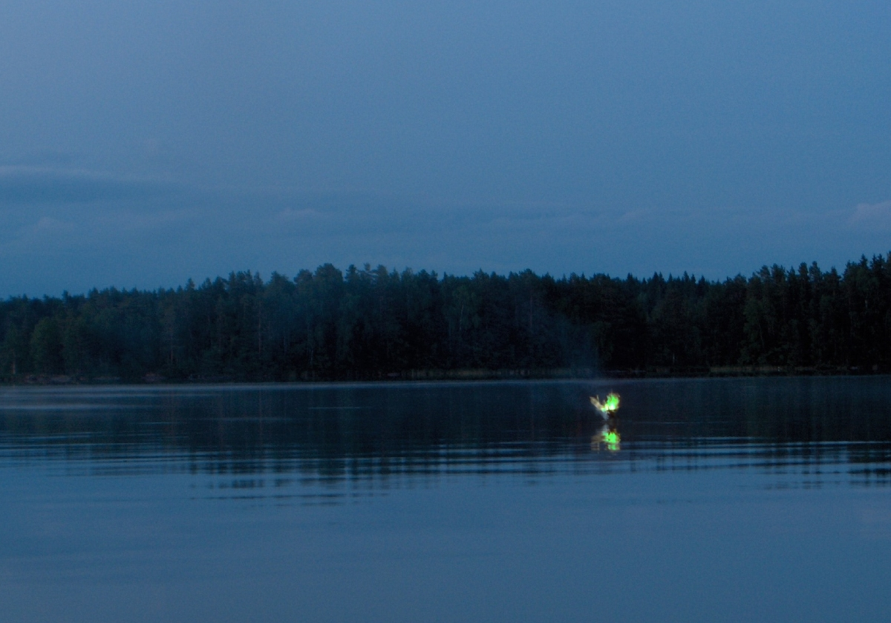

La Luz Mala es un fenómeno muy misterioso: luz frio que flota arriba de la tierra. Este luz también se llama fuego fatuo. Los personas de Uruguay creen que para defenderte de la luz, necesitas morder la vaina de un cuchillo. Si eso no funciona, puedes defenderte con un cuchillo de acero.
